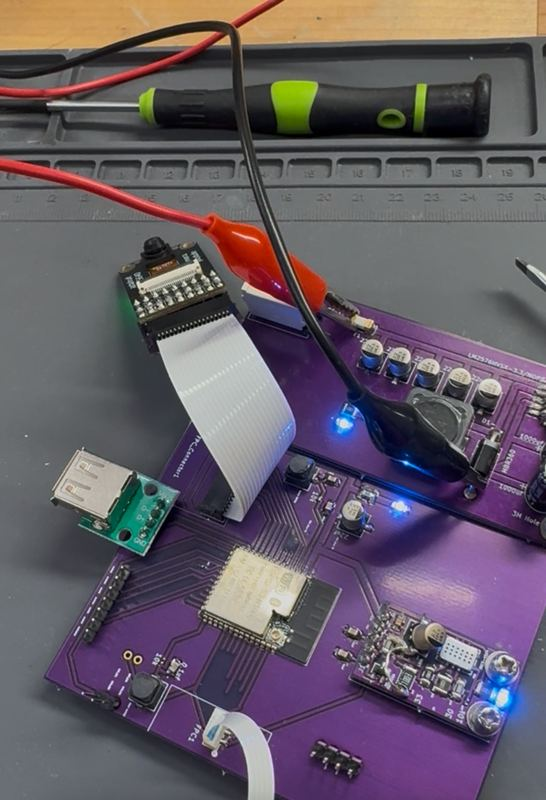
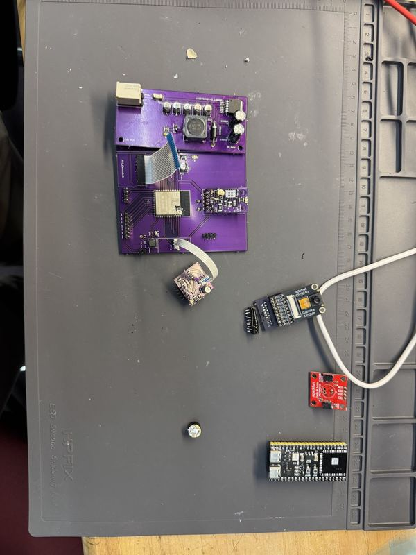
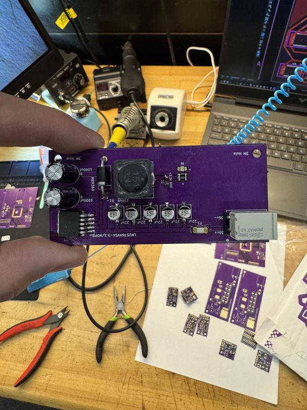
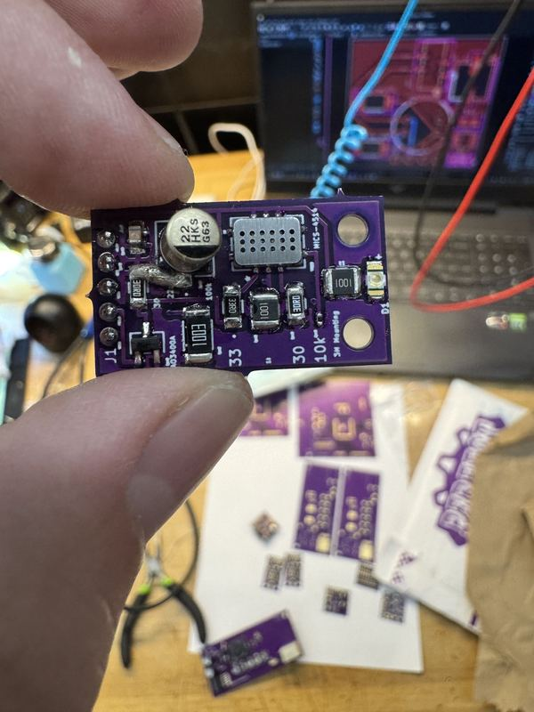
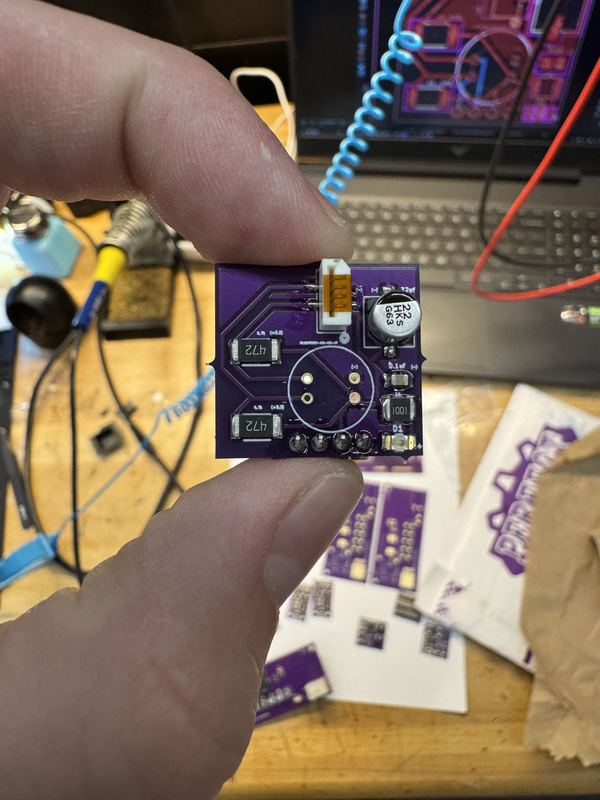
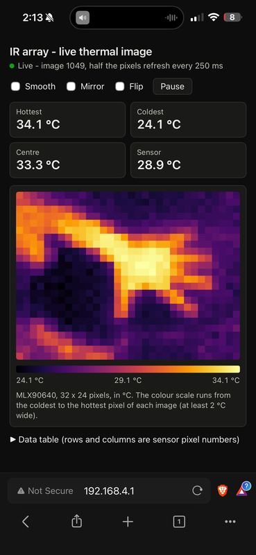
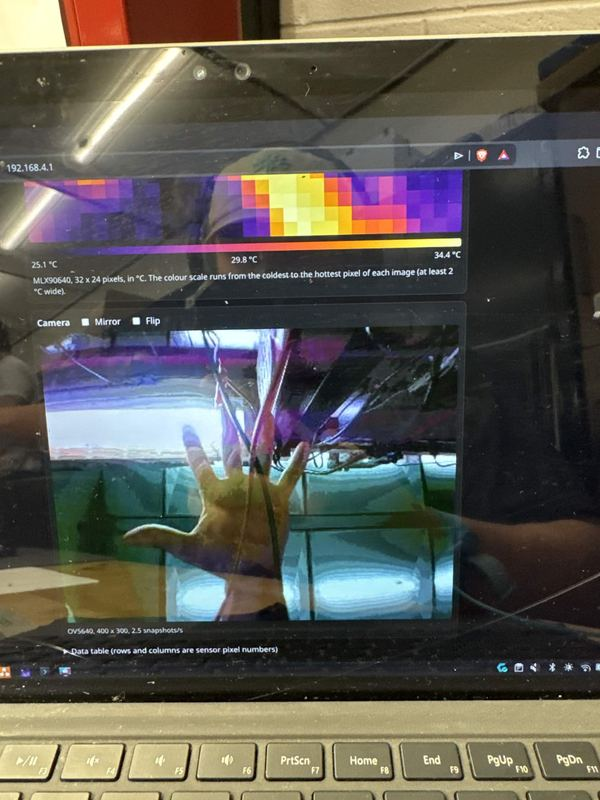
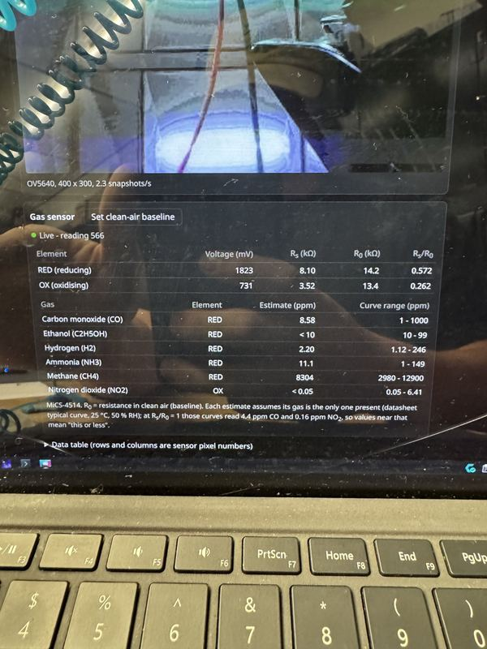

Final showcase
Showcase Presentation
Our final presentation of Project CHIRON, including the design documents behind the build.
Design documents inside
The archive of our class work on CHIRON: the final showcase, every milestone document from team contract to critical design review, KiCad projects for our custom sensor boards, the ESP32 firmware and Jetson control code, and photos of the build.
From the team contract to the final showcase: the reports and presentations that took CHIRON from first requirements to a reviewed design. PDFs open in a new tab, and every file can be downloaded.
Our final presentation of Project CHIRON, including the design documents behind the build.
Where CHIRON started: our mission for a wheeled centauroid that adapts to the workspace, team ground rules, how we work with stakeholders, and each member's role.
Turns stakeholder needs for urban emergency response and inspection into requirements: needs analysis and House of Quality, a technology assessment of benchmark robots, and mechanical, electrical, software, and compliance requirements, with the project Gantt chart.
The engineering baseline for CHIRON: concept of operations and mission scenarios, concept generation with trade studies and selection scoreboards for every subsystem, preliminary mechanical, electrical, and power-distribution analysis, and a full failure modes and effects analysis.
This semester's targets (a 6-DOF arm lifting 5 kg, a camera, IR, and gas sensing block, self-balancing mobility, one hour of runtime, and a bill of materials under $11,000) with the technical approach and dated deliverables.
The written CDR: design definitions for mobility, manipulation, mechatronics, and power distribution with CAD, block diagrams, and wiring schematics, followed by engineering calculations, FMEA, prototyping strategy and test protocols, and the development, resource, and project plan.
Our CDR presentation: requirements, system architecture, CAD of the mobility and manipulation designs, torque, FEA, and LTspice analysis, power-distribution wiring diagrams, FMEA, the test plan, and prototype readiness, plus backup slides of engineering evidence.
KiCad 10 projects for the boards we designed. Extract a download and open its .kicad_pro file in KiCad 10 or newer.
The controller that ties the sensor boards together: an ESP32-S3-WROOM-1 (N16R8) with an FPC connector for the OV5640 camera, I²C to the thermal IR array, inputs for the MiCS-4514 gas sensor, and USB, UART, and SPI headers.
Open Camera_FINAL for the finished layout. The zip also includes the earlier Camera_PCB revision and older copies of the sensor boards; use the downloads below for their latest versions. Its firmware is under Software.
Carries the OV5640 camera module's through-hole headers to an 18-pin FPC connector, linking the camera to the main board over a flat cable.
Breakout for the MLX90640 32 × 24 thermal infrared array, connected to the main board's I²C bus through a 4-pin FPC or header.
Gas sensor board for the MiCS-4514, with separate reducing-gas and NOx outputs and a MOSFET-switched preheater, all on a 5-pin header.
Step-down supply built on the LM2576HV-3.3 switching regulator, with a screw-terminal input and an onboard fuse. Gerber files are included for fabrication.
The firmware on the ESP32-S3 sensor board, and the Python program on the Jetson that runs the end effector. Select View to read the code in your browser.
Reads the MLX90640 thermal array twice a second, captures OV5640 camera frames and compresses them to JPEG, tracks the MiCS-4514 gas readings against a clean-air baseline, and serves all three on a live dashboard over the board's own Wi-Fi network. Each module cites the datasheet sections behind its settings.
Builds with ESP-IDF 6.1 (idf.py build), which fetches the camera and JPEG components the first time. Set WEB_AP_PASSWORD in webServer.h before flashing.
One Python program on the Jetson that serves the end effector's control page. It moves two moteus motors over CAN by angle (go to an angle, step, or hold to turn, one at a time or both together) and runs the Feetech ST gripper servo with adjustable speed and grip strength.
Safety is built in: Stop all (or Space or Esc) halts everything, a jammed motor stops pushing on its own, moving parts stop if the page loses contact, and moves stay inside each motor's saved limits unless overridden.
Circuit development, from bare boards to live sensor data on the dashboard. Select any photo to see it full size.








Read about CHIRON's mission, its wheel-leg mobility concept, and the hazard-detection work these boards support.